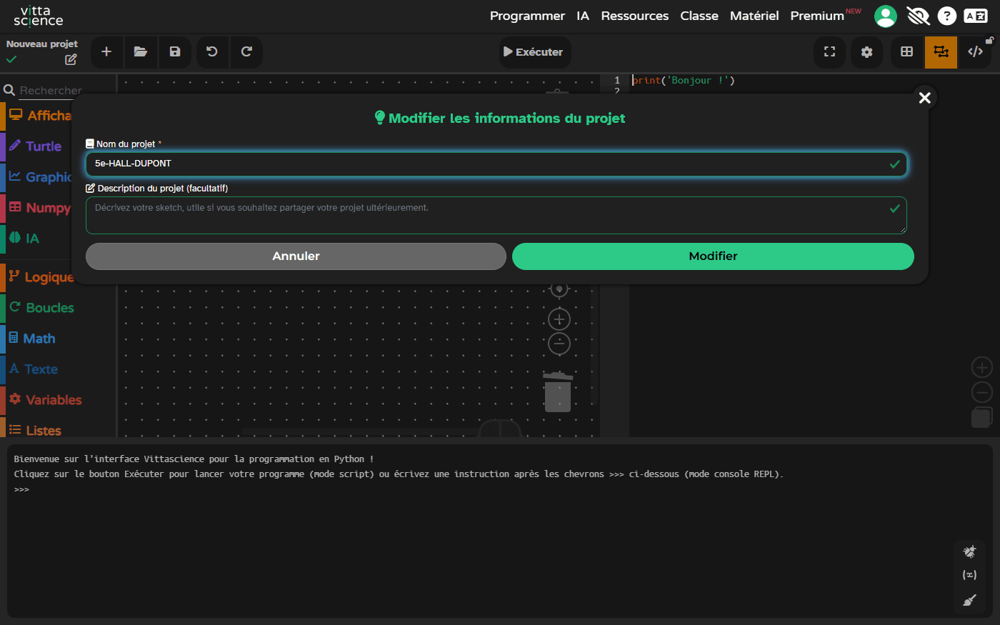
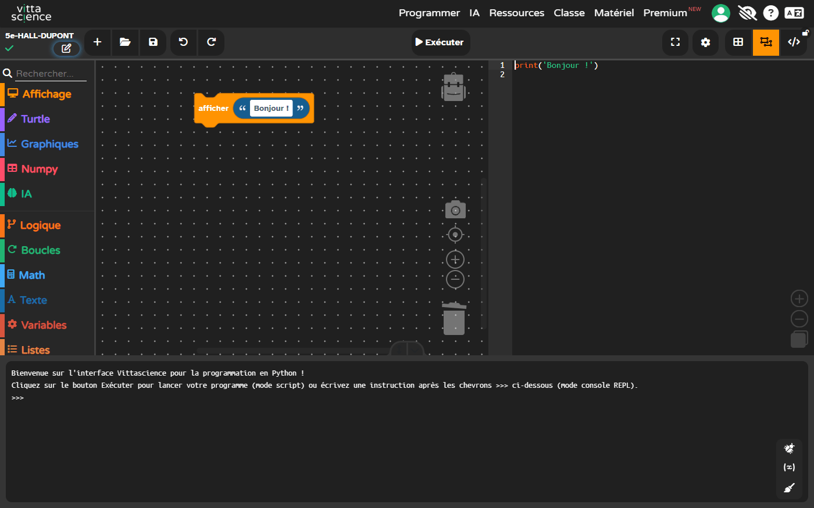
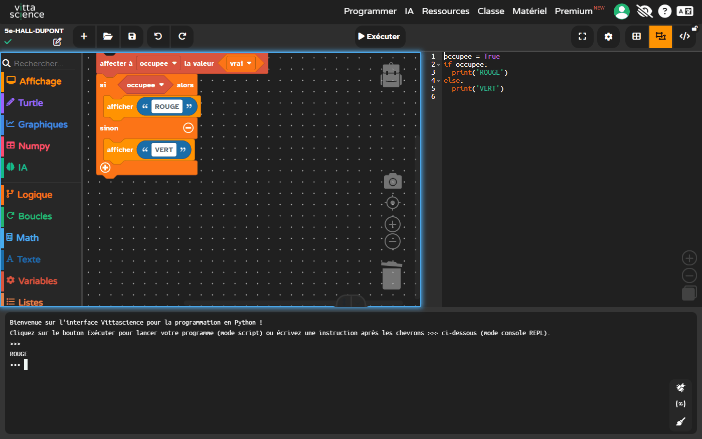
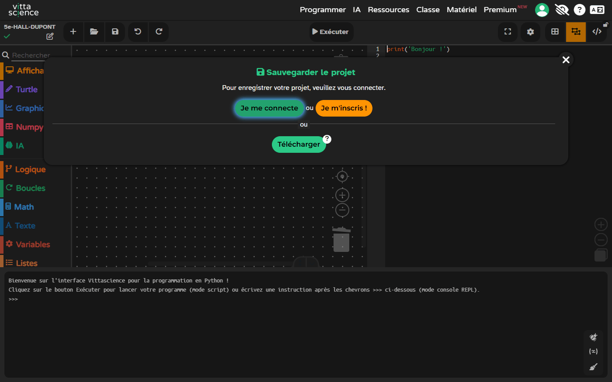
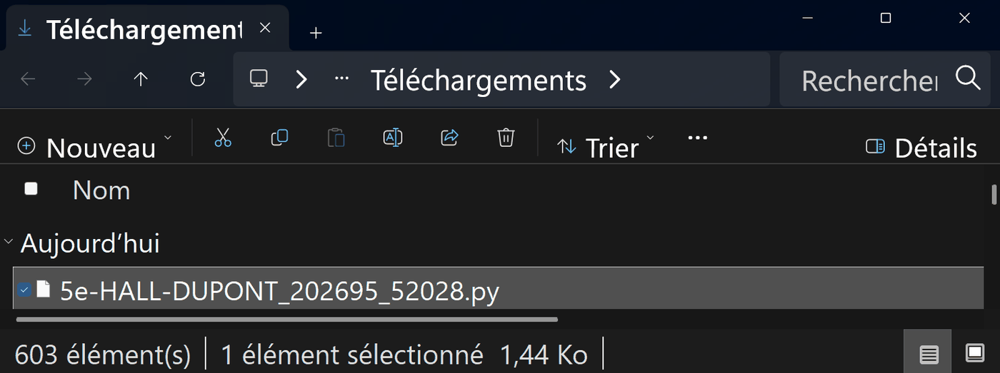
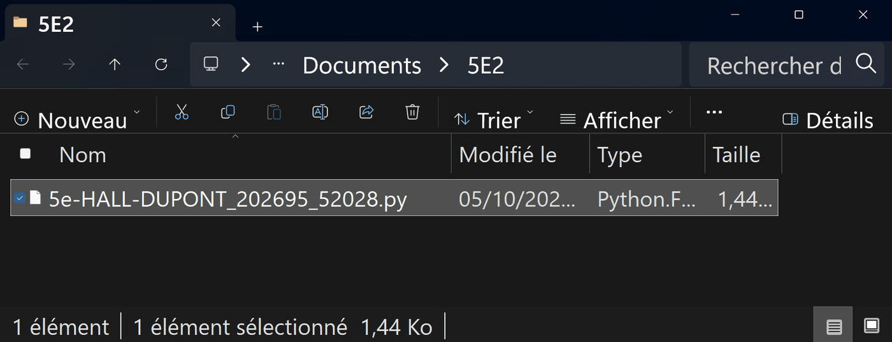

Imaginer, valider par des tests, puis écrire une règle de programme simple — New York
5eThème 3 — Création, conception, réalisation, innovations : des objets à concevoir et à réaliser5e_C7.15e_C8.35e_C9.3Socle : D2 · D3 · D4 · D5New York⏱ 3 séances de 55 min
📚 Les trois compétences travaillées — en toutes lettres
Ce ne sont pas des familles, ce sont trois compétences précises du programme 2024,
citées mot pour mot :
5e_C7.1
Suivre un processus de conception et de réalisation dans une durée, avec des tâches identifiées.
5e_C8.3
Vérifier le comportement et les performances d'un objet technique en suivant un protocole fourni.
5e_C9.3
Réaliser et mettre au point un programme simple commandant un OST.
Cette séquence annonçait auparavant « C7 · C8 · C9 »,
c'est-à-dire douze compétences pour en servir trois. Elle n'en revendique plus que ce qu'elle
produit : le choix d'un matériau, l'assemblage d'un prototype ou la modification d'un programme
fourni relèvent d'autres codes, qui restent à créer.
🔀 Mon parcours :
Parcours affiché : tous.
Le mode essentiel masque le référentiel, les corrections et les compléments : il ne reste que les consignes et les exercices.
Ma progression : 0 / 6 activités validées
🎫 Billet d'entrée — trois questions, sans note
Cette séquence s'appuie sur ce que tu as fait en 6e et à l'école. Elles ne comptent pas dans ta progression et ne sont pas notées — « je ne sais pas encore » est une réponse utile.
🔀 Deux façons de vivre la séquence
🅱 En simulation : le simulateur de place de l'activité 0 fonctionne dans la page, sans rien installer, et l'éditeur Vittascience, dans son onglet, prend le relais pour le programme. C'est le parcours principal.
🅲 Sur papier : croquis et tableau de tests à compléter au cahier — mêmes questions, mêmes validations. Le simulateur reste utilisable pour observer.
Aucun parcours ne retire de question. Le sélecteur en haut de page masque seulement
ce qui ne te concerne pas ; tout ce qui est évalué reste demandé à tout le monde.
🗺 Où j'en suis — les 6 activités de cette séquence
Chaque activité validée se colore ici. Rien ne se perd si tu t'arrêtes en route.
🔁 Le contrat de la séquence
FAIRE pour comprendre : tu commences par APPUYER sur le bouton du simulateur (activité 0) et regarder la LED changer — avant toute règle écrite.
COMPRENDRE : les « À retenir » nomment les concepts : capteur, état, règle SI.
REFAIRE pour comprendre encore : tu réinvestis la même règle SI sur un NOUVEAU cas (le casier de bibliothèque) — même squelette, autre habit.
📖 Situation déclenchante
Le hall de la Brooklyn Middle School, huit heures moins dix. Deux cents élèves entrent en
huit minutes. Contre le mur, vingt casiers ouverts pour poser les sacs — pas de porte, pas de
serrure, juste des cases carrées. Le problème n'est pas qu'il n'y a pas de place : c'est qu'on
ne voit pas laquelle est libre. Il faut s'approcher, se pencher, regarder dedans. Alors les
élèves posent leur sac par terre, devant. Et à huit heures moins cinq, on marche dessus.
M. Alvarez, qui s'occupe du bâtiment, a compté : trois chutes en un mois. Il a
demandé des casiers fermés — trop cher. Il vient te voir avec une idée à lui :
« Je ne veux pas de porte. Je veux juste un petit voyant au-dessus de chaque case :
vert, elle est libre, tu peux poser ton sac ; rouge, elle est prise, passe à la
suivante. Qu'on le voie depuis l'entrée, sans s'approcher. »
Voilà l'objet que tu vas construire : un voyant vert ou rouge au-dessus d'une case du
hall. Rien de plus. Il faut qu'il sache si la case est occupée, et qu'il le dise à trois mètres
de distance.
Ce genre d'objet porte un nom dans le métier : on l'appelle
un indicateur d'occupation. Tu retrouveras ce mot dans les gares, les parkings et les
toilettes d'avion — partout où il faut dire « libre » ou « occupé » sans ouvrir
la porte.
❓ Problématique
Comment améliorer un objet scolaire : imaginer, valider par des tests, puis écrire une règle de programme simple ?
💡 Avant de commencer, ton idée à toi
Sans réfléchir longtemps : comment ton voyant peut-il savoir qu'un sac est posé dans la
case ? Écris ta première idée, même si elle te paraît bête. On la relira à la fin, et tu
verras le chemin parcouru.
💾 Tes réponses sont enregistrées dans ce navigateur, à chaque
modification.
🖐️ Activité 0 — FAIRE d'abord : le simulateur de place ⏱ ~10 min
Consigne : AVANT toute règle écrite, pose et enlève un sac plusieurs fois. Observe la LED.
Place : libre · LED :
Fais au moins deux allers-retours (poser PUIS enlever, deux fois).
Q1 — Quand la place est OCCUPÉE, la LED est…
Q2 — Qu'est-ce qui JOUE LE RÔLE du capteur dans ce simulateur ?
📖 Correction complète (à ouvrir APRÈS tes essais)
Place occupée → LED rouge ; place libre → LED verte. Le bouton joue le rôle du capteur : il DÉTECTE l'état (sac posé ou non). La LED est l'actionneur : elle AFFICHE la décision. Tu viens de faire fonctionner, à la main, la chaîne capteur → décision → affichage.
À retenir (COMPRENDRE) : un capteur détecte un état, une règle SI décide, un actionneur (LED) montre la décision. Tu l'as vécu avant de le nommer.
🔧 Activité 1 — Imaginer (5e_C7.1)⏱ ~30 min
1a — Ton planning
#
Tâche
min
1
20
2
25
3
20
4
40
1b — Tes deux solutions et ton choix
🪜 Version étayée — des phrases à compléter
Le niveau attendu est exactement le même qu'avec la consigne libre : ces débuts
de phrases retirent l'obstacle de la rédaction, pas l'exigence.
Solution A : ____ . Solution B : ____ .
Elles sont vraiment différentes parce que ____ .
Je choisis ____ , parce que ____ et parce que ____ .
📖 Correction complète
Exemples : A — bouton-poussoir sous la tablette + LED ; B — capteur de distance qui « voit » le sac. Choix argumenté par un critère nommé (simplicité, prix, solidité dans un hall fréquenté). Organiser → plusieurs idées → choix avec critères : une seule idée n'est pas une conception.
À retenir : organiser → plusieurs idées → choix avec critères.
🧪 Activité 2 — Valider (5e_C8.3)⏱ ~25 min
PRÉDIS chaque résultat, puis VÉRIFIE-le au simulateur de l'activité 0 (pose / enlève le sac) et compare :
Test
Attendu
Le simulateur confirme-t-il ?
Poser le sac
Enlever le sac
Visible à 2 m
Oui (LED assez brillante)
Décision :
📖 Correction complète
Poser → LED rouge · Enlever → LED verte · Visible → Oui. Tout est conforme → décision Validée. On valide seulement si les tests importants réussissent — et chaque test a son résultat attendu ÉCRIT AVANT d'essayer.
À retenir : on valide si les tests importants réussissent — attendu d'abord, observé ensuite.
🧰 Avant de commencer (échauffement) — les quatre gestes de Vittascience
Quatre gestes à faire une fois, au début, et ta séance ne se perdra pas. Tu les as peut-être déjà faits une autre année : refais-les, c'est court. Et si tu ne les as jamais faits, tout est écrit ici.
Ouvrir. Clique sur le bouton ▶ Ouvrir l'éditeur Vittascience dans un nouvel onglet de l'activité 3 : l'éditeur Python s'ouvre dans un nouvel onglet, en mode mixte : des blocs à gauche, le Python à droite. Vittascience met déjà un exemple, le bloc « afficher Bonjour » et sa ligne Python : tu peux l'effacer avant de commencer.
Ce que tu dois voir : le bouton ▶ Ouvrir l'éditeur Vittascience…, dans le cadre de l'activité 3. Puis : clique-le ; garde cet onglet-ci ouvert pour lire la consigne.Comment savoir que c'est fait : les blocs à gauche, le Python à droite, la console en bas, et le nom « Nouveau projet » en haut à gauche. Le bloc « afficher Bonjour » est l'exemple que Vittascience pose dans tout projet neuf : tu peux l'effacer avant de commencer.
Nommer. Clique le crayon à côté du nom du projet, en haut à gauche, et remplace « Nouveau projet » par 5e-HALL-TON NOM. Un projet sans nom est introuvable la semaine suivante.

Ce que tu dois voir : la fenêtre « Modifier les informations du projet », avec ton nom dans « Nom du projet ». Puis : clique Modifier. DUPONT est un exemple : mets ton nom.

Comment savoir que c'est fait : ton nom apparaît en haut à gauche. C'est lui qui nommera ton fichier au geste 4.
Retrouver. La semaine suivante, ouvre ton fichier : clique le dossier (Ouvrir), l'onglet Depuis votre appareil, le bouton Ouvrir…, puis ton fichier .py dans Documents, dans le dossier de ta classe. Vittascience te demande de confirmer : clique Oui. Ton programme revient, en blocs et en Python, avec son nom.
Ce que tu dois voir : clique le dossier dans la barre d'outils, puis l'onglet Depuis votre appareil. Puis : clique Ouvrir… et choisis ton fichier .py, dans Documents, dans le dossier de ta classe. N'utilise pas « Mes projets sur le cloud » : tu n'es pas connecté.Ce que tu dois voir : Vittascience te demande de confirmer. Clique « Oui » : ce que tu avais déjà fait dans cet onglet est remplacé par ton fichier.

Comment savoir que c'est fait : ton programme est revenu, en blocs et en Python, avec ton nom. Exécuter affiche dans la console ce qu'il affichait avant. Ce programme est un exemple : c'est le tien qui revient.
Sortir. Vittascience ne garde pas ton travail d'une séance à l'autre. Clique la disquette, puis Télécharger : un fichier .py au nom de ton projet arrive dans Téléchargements. Vittascience ajoute des chiffres à la fin du nom du fichier : c'est normal. Déplace-le dans Documents, dans le dossier de ta classe (exemple : 5E2). Si ce dossier n'existe pas encore, crée-le d'abord : dans Documents, Nouveau → Dossier, tape le nom de ta classe, puis valide.

Ce que tu dois voir : la fenêtre « Sauvegarder le projet », ouverte par la disquette. Ne te connecte pas et ne t'inscris pas : clique Télécharger, le bouton vert tout en bas.

Ce que tu dois voir : le fichier .py au nom de ton projet, dans Téléchargements — le navigateur l'y range sans rien demander. Clique-le une fois, puis Ctrl + X pour le couper. Les chiffres à la fin du nom sont ajoutés par Vittascience ; DUPONT est un exemple. La fenêtre est rétrécie pour ne montrer que ce fichier.Si le dossier de ta classe n'existe pas encore : dans Documents, clique Nouveau puis Dossier. Un dossier apparaît, son nom surligné : tu peux taper le tien. La fenêtre est rétrécie : tes autres dossiers ne sont pas montrés.

Comment savoir que c'est fait : en haut, Documents › 5E2 ; dans la liste, ton fichier .py. Il n'est plus dans Téléchargements : il est rangé.
💻 Activité 3 — La règle SI en schéma, puis en programme (5e_C9.3)⏱ ~30 min
🌐 Cette activité demande une connexion Internet — l'éditeur Vittascience est en ligne. Sans connexion : écris ton programme sur le cahier : la logique est ce qui compte, la saisie se fera à la séance suivante.
3a — Remets l'algorigramme en ordre (représentation schématique)
Ce que le simulateur FAIT se dessine. Numérote les blocs de 1 à 5 :
⬭ débutDÉBUT (au démarrage de l'indicateur)
▭ traitementLire le capteur (sac posé ou non)
◇ décisionPlace occupée ?
▭ action OUIOUI → LED rouge
▭ action NONNON → LED verte, puis revenir à la lecture
📖 Correction bloc par bloc
1 — DÉBUT (un algorigramme commence par un terminal). 2 — Lire le capteur (rectangle : l'ENTRÉE de l'information). 3 — Place occupée ? (losange : la DÉCISION, toujours deux sorties). 4 — OUI → rouge et 5 — NON → verte, puis retour : la flèche qui remonte fait la BOUCLE — l'indicateur surveille en continu, comme le simulateur que tu as manipulé.
3b — Écris la règle, puis fais-la vivre en blocs ↔ Python
🧪 Code ta règle dans l'onglet Vittascience — en blocs, puis lis le Python (et inversement)
Construis la décision en BLOCS (logique → si/sinon) et observe le Python s'écrire ; puis change le Python (occupee = True puis False) et regarde les blocs suivre. Dans le volet Python, change seulement ce que la consigne demande. Le reste, fais-le avec les blocs. Sans LED réelle : print("ROUGE") et print("VERT"). Les DEUX SENS comptent : blocs → texte, texte → blocs. Nomme ton projet 5e-HALL-TON NOM, puis télécharge-le (geste 4).
Vittascience n'accepte pas d'être affiché à l'intérieur d'une autre page : l'éditeur s'ouvre dans un onglet à part. Garde cet onglet-ci ouvert pour lire la consigne.
📖 Correction complète
occupee = True
if occupee:
print("ROUGE")
else:
print("VERT")
La règle SI a exactement la forme du losange de l'algorigramme : une question, deux chemins. Schéma et code disent LA MÊME CHOSE en deux langages.
🎨 Lis le code en couleurs : variables · "textes" · nombres · mots-clés · = et opérateurs
À retenir : SI + action ; tester avec des cas concrets. L'algorigramme et le programme sont deux habits du même raisonnement.
🔄 REFAIRE — Réinvestissement ⏱ ~15 min
Même logique pour un casier de bibliothèque (livre présent / absent). Écris la règle SI (4 lignes) :
🪜 Version étayée — des phrases à compléter
Le niveau attendu est exactement le même qu'avec la consigne libre : ces débuts
de phrases retirent l'obstacle de la rédaction, pas l'exigence.
Ce que l'objet mesure : ____ .
SI ____ ALORS ____ .
SINON ____ .
Ce qui change par rapport au voyant du hall : ____ .
📖 Correction complète
SI livre présent ALORS
LED verte (disponible)
SINON
LED rouge (emprunté)
FIN SI
Ce que tu viens de refaire avec le casier, tu l'avais déjà fait avec la place de rangement — le concept commun s'appelle la règle SI (condition à deux chemins). Change le capteur, garde la règle.
À retenir (REFAIRE) : réinvestir la règle sur un autre objet, c'est la preuve qu'on l'a comprise.
📝 Synthèse
Améliorer un objet = imaginer (C7) → tester (C8) → règle SI (C9), à partir d'un vrai besoin de l'école à New York. Tu as d'abord FAIT (le simulateur de place), puis COMPRIS (capteur, décision, actionneur — et leur dessin en algorigramme), puis REFAIT (le casier de bibliothèque) : le concept invariant s'appelle la règle SI, et tu le retrouveras toute l'année sous d'autres habits (blocs, Python, algorigrammes).
🎁 Bonus (facultatif — hors parcours obligatoire)
Citoyen : Quel autre objet du collège améliorer, et pour quel besoin ?
Technique : Ajoute un test « tenue si on secoue le support » (étape + résultat attendu) :
New York : Pourquoi un indicateur visible est-il utile dans un hall très fréquenté ?
🙋 Bilan personnel
J'ai appris :
Je sais faire :
À revoir :
Confiance (1-4) :
🎲 Avant de dessiner ton support — le TP « Le dé »
Pour fabriquer le support de l'indicateur, il faudra le dessiner dans un logiciel de
conception. On n'apprend pas un logiciel en même temps qu'on invente un objet : ce TP te fait
donc construire quelque chose de simple, un dé de 50 mm, du plan vide jusqu'à la pièce prête
à imprimer.
Trente-cinq étapes, huit paliers. On commence par ranger et nommer son travail, on finit par
colorer son dé. Chaque étape dit ce que tu dois voir à l'écran — si tu ne le vois pas, tu ne
continues pas. Aucune question de cours : on apprend l'outil ici, on évalue la notion
ailleurs.
📅 Le diagramme de planification des tâches — atelier commun
Le programme demande, en 5e, de SUIVRE un processus de réalisation d'un objet avec des tâches identifiées. Avant de lancer la fabrication, tu reçois le planning du projet déjà fait. Ton travail : le suivre — savoir à chaque séance ce qui est fini, ce qui est en retard, et ce que ce retard décale.
Cet atelier est partagé par les trois niveaux : il se place au lancement du projet, dure une séance, et se fait aussi bien avec des bandes de papier qu'avec le logiciel.
![La page de la séquence, en thème sombre, sur l'activité 3b. Un cadre « Code ta règle dans l'onglet Vittascience — en blocs, puis lis le Python (et inversement) » donne la consigne : construire la décision en blocs, changer le Python (occupee = True puis False) en ne modifiant que ce que la consigne demande, puis nommer le projet 5e-HALL-TON NOM et le télécharger (geste 4). Dessous, un bouton bleu « ▶ Ouvrir l'éditeur Vittascience dans un nouvel onglet », puis la phrase « Vittascience n'accepte pas d'être affiché à l'intérieur d'une autre page : l'éditeur s'ouvre dans un onglet à part. Garde cet onglet-ci ouvert pour lire la consigne. »](Images/geste_vitta_1_ouvrir_bouton.png)
![L'éditeur Python de Vittascience, en thème sombre et en mode mixte. En haut à gauche, le nom « Nouveau projet ». La barre d'outils : Nouveau, Ouvrir, Sauvegarder, Annuler, Rétablir, puis Exécuter au centre, et à droite les trois boutons de mode, celui du milieu (orange) étant actif. À gauche, les catégories de blocs (Affichage, Turtle, Graphiques, Numpy, IA, Logique, Boucles, Math, Texte, Variables, Listes) et un bloc orange « afficher Bonjour ! ». À droite, le code Python print('Bonjour !'). En bas, la console avec son message de bienvenue.](Images/geste_vitta_1c_ouvrir_editeur.png)